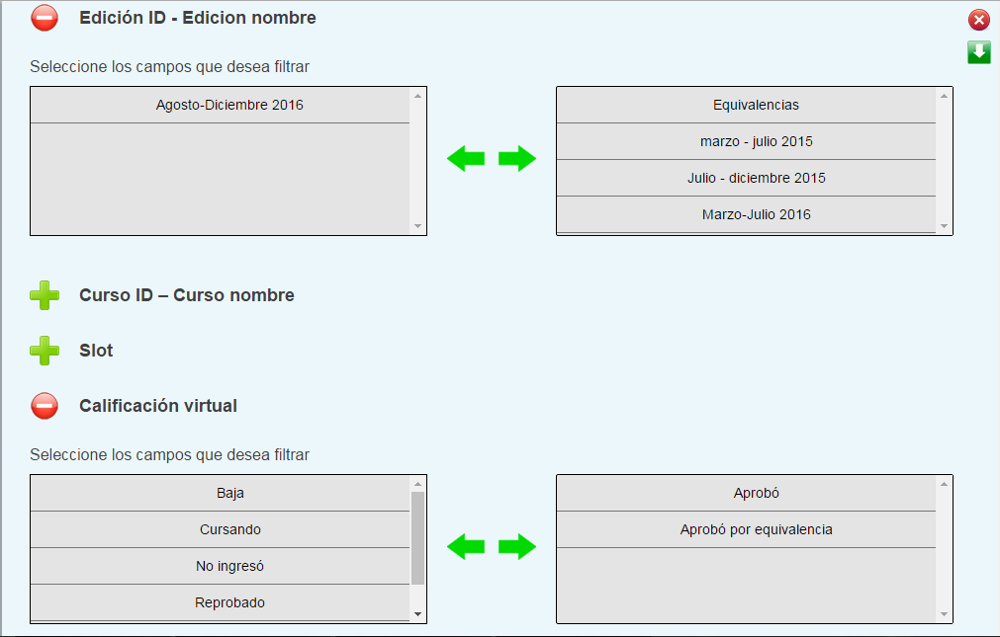
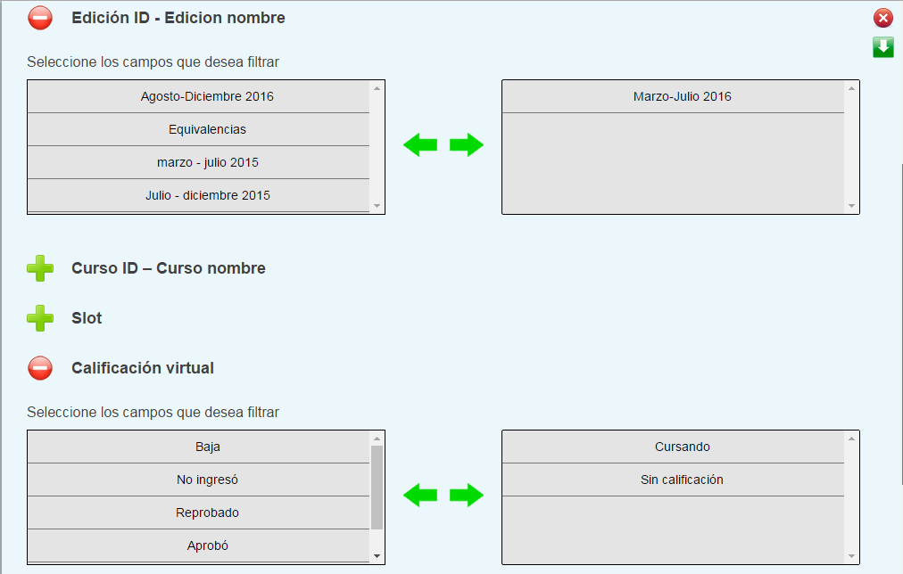
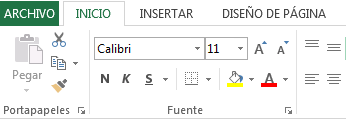
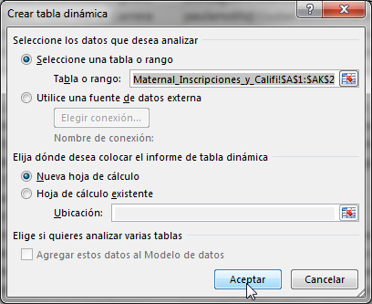
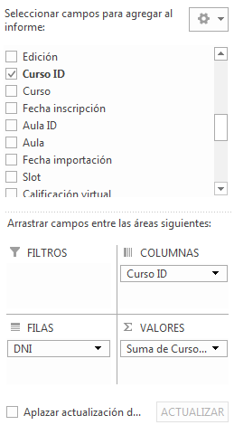
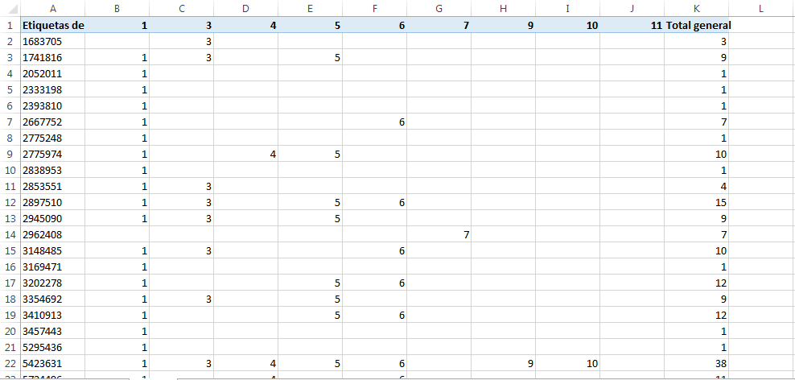
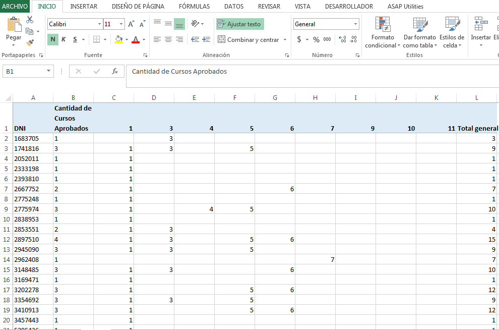
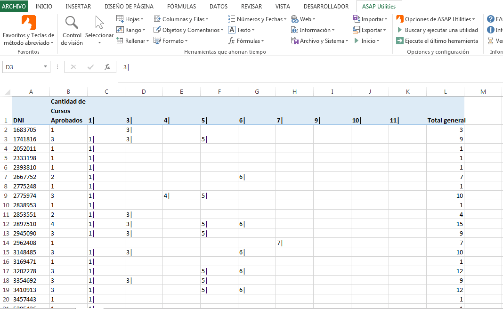
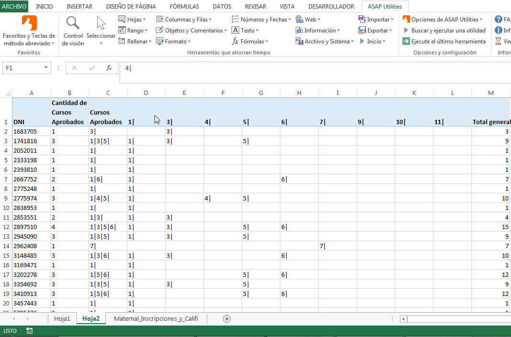

TUTORIAL DE PROYECCIÓN
-
!
ATENCIÓN: para el siguiente tutorial necesitamos estar
SEGUROS de que todos los inscriptos tienen una regla de salida. En el caso de no tenerla, nuestros resultados no serán confiables. Necesitamos hacer esa verificación primero.En este tutorial veremos cómo comparar las reglas de inscripción, con la situación particular de cada cursante. Podremos saber los cursos que tiene aprobado cada alumno y asimismo, identificar qué reglas debemos editar para balancear las inscripciones de los alumnos ya inscriptos, al próximo cuatrimestre.
-
1
Para empezar, podemos hacer una proyección de inscripciones al postítulo de Maternal.
Del reporte de “Inscripciones y Calificaciones”, tenemos que filtrar sólo los alumnos activos.
De las calificaciones, sólo las que consideremos aprobadas.
Si todavía no se importaron las calificaciones, debemos bajar otro reporte con las materias del slot que falte, y concatenarlo con el que bajamos.
 -
2
Si el postítulo tuviera cursos con optativos, tenemos que "Buscar y Reemplazar" los cursos hijos por los padres
Una vez que tenemos nuestra tabla con inscripciones, debemos hacer una tabla dinámica con los datos:   Es importante que copiemos la tabla, y peguemos sólo los valores en otra hoja. No volveremos a necesitar de la tabla dinámica
-
3
Ahora podríamos aprovechar para contar la cantidad de cursos aprobados. No lo necesitaremos para la proyección, pero es una buena manera de identificar cuántos cursos aprobados tiene cada alumno
 -
4
Ahora tenemos que usar el complemento "ASAP Utilities" para agregar el símbolo '|' luego de cada curso.
Esto será más claro cuando hagamos el cruce con el reporte de reglas
A continuación, lo concatenamos en una sola columna, que ya tendrá un orden ascendente

IMPORTANTE! debemos ordenar los valores tanto en las inscripciones como en las celdas para tener consistencia al momento de comparar los dos reportes
Sólo usaremos las primeras 3 columnas, podemos borrar el resto
Click aqui para ver parte 2